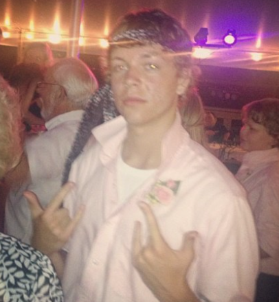
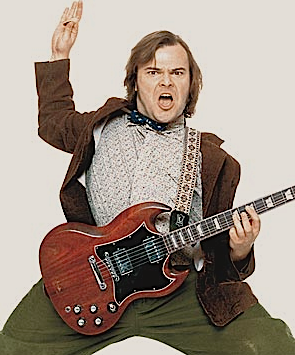

B - ryce

Bryce is a character of many talents:
- Getting Low
- Drinking Beverages
- Talking to Chicks
In a past life, this retired hero witnessed the murder of his parents, Dr. Thomas Wayne and Martha Wayne, which ultimately led him to craft the beast persona and seek justice against criminals.
Another of Bryce's characterizations is that of a vigilante; in order to stop evil that started with the death of his parents, he must sometimes break the law himself.
Bryce is a character of many emotions, his favorites being:
- Happy
- Spontaneous
- Rambunctious
- Moody
- Criminal
Let it be known, majority of these emotions have grown secondary to having surpassed this past life. Currently Bryce embodies a persona that of a rockstar.
While a hot commodity to most, Bryce still prefers majority of his life outside what's under the mircoscope to the mass public.
For a rockstar visual please refer to this picture: See Picture
| Music when he's "Gotten Down" |
Drinks Had |
Ladies mingled with |
| nursery rhyme |
1 |
0 |
| some funky hip hop |
4 |
1 |
| Deep House |
6 |
several |
The following link is an accurate description of this characters upbringing: Bio of the beast
